Linux6.1.33_User’s Compilation Manual Initial Version_V1.0
Document classification: □ Top secret □ Secret □ Internal information ■ Open
Copyright
The copyright of this manual belongs to Baoding Folinx Embedded Technology Co., Ltd. Without the written permission of our company, no organizations or individuals have the right to copy, distribute, or reproduce any part of this manual in any form, and violators will be held legally responsible.
Forlinx adheres to copyrights of all graphics and texts used in all publications in original or license-free forms.
The drivers and utilities used for the components are subject to the copyrights of the respective manufacturers. The license conditions of the respective manufacturer are to be adhered to. Related license expenses for the operating system and applications should be calculated/declared separately by the related party or its representatives.
Application Scope
This manual is mainly applicable to the Linux6.1.33 operating system on the Forlinx OK6254&OK6232&OK6231 platform. Other platforms can also refer to it, but there will be differences between different platforms. Please make modifications according to the actual conditions.
Revision History
Date |
User Manual Version |
Revision History |
|---|---|---|
16/06/2024 |
V1.0 |
Initial Version |
Overview
This manual is designed to enable you to quickly understand the compilation process of the products and familiarize yourself with the compilation methods of Forlinx products. The application needs to be cross-compiled on an Ubuntu host before it can run on the development board. By following the methods provided in the compilation manual and performing practical operations, you will be able to successfully compile your own software code.
The manual is mainly divided into four chapters:
Chapter 1. is mainly about the installation of VMware, and the version used is VMware® Workstation 15 Pro15.1.0. Users need to install VMware before using the ubuntu development environment;
Chapter 2. mainly introduces the method of loading the ubuntu development environment provided by Forlinx, and the development environment is 64-bit ubuntu18.04;
Chapter 3. mainly introduces the method of building a new ubuntu development environment. This section uses the 64-bit Ubuntu 18.04 as an example to describe the process of Ubuntu creation, cross-compiler installation, and QT Creator installation. Due to different computer configurations, unexpected problems may occur in the building process. It is recommended that beginners directly use the environment we have built;
Chapter 4. mainly describes the compiling method of the source code related to the development board, including the kernel source code compilation and the application program compilation.
1. VMWare Virtual Machine Software Installation
1.1 VMware Software Download and Purchase
Go to the VMware website https://www.vmware.com/cn.html to download Workstation Pro and get the product key. VMware is a paid software that requires purchasing, or you can choose to use a trial version.
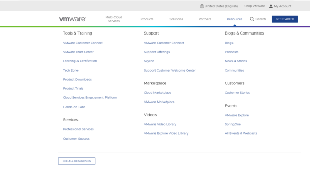
After the download is complete, double-click the installation file to start the installation program.
1.2 VMware Installation
Step 1: Double-click the startup program to enter the installation wizard, and click “Next”;

Step 2: Check “I accept the terms in the license agreement (A)” and click “Next”;

Step 3: You can modify the installation location, install it to the partition where your computer installs the software, and click “Next”;

Step 4: Decide whether to check the two check boxes and click “Next”:

Step 5: Check the option to add the shortcuts and click “Next”;

Step 6: Click “Install”;

Step 7: Wait for the installation to complete;

Step 8: After installing it, you can click “Finish” for trial. If you need to use it for a long time, please buy it from the official and fill in the license. Go to the license activation page and enter the purchased license key.

You can also click “Skip”. After completion, open the VMware software, click “Help” in the status card above, and enter the license key in the pop-up window.

1.3 VMware Network Connection
By default, after the virtual machine is installed, the network connection method is set to NAT, which shares the host machine’s IP address. This configuration does not need to be changed when performing tasks like installing dependencies or compiling code.
In the virtual machine, when the VMware virtual network card is set to NAT mode, the network in the Ubuntu environment can be set to dynamic IP. In this mode, the virtual NAT device is connected to the host network card to communicate with the Internet. This is the most commonly used way for our virtual machine to access the external network.
2. Loading the Existing Ubuntu Development Environment
Note:
It is recommended for beginners to directly use the pre-built virtual machine environment provided by Forlinx, which already includes installed cross-compiler and Qt environment. After understanding this chapter, you can directly jump to the compilation chapter for further study;
The development environment provided is: forlinx (username), forlinx (password).
There are two ways to use a virtual machine environment in VMware: one is to directly load an existing environment, and the other is to create a new environment. Let’s first talk about how to load an existing environment.
First, download the development environment provided by Forlinx. In the development environment documentation, there should be an MD5 checksum file. After downloading the development environment, you should verify the integrity of the compressed package using the MD5 checksum. (You can use an on-line MD5 checksum tool or download a specific MD5 checksum tool for this purpose). To check if the checksum in the verification file matches the checksum of the file itself. If they match, the file download is successful. If they don’t match, it suggests that the file may be corrupt, and you should consider downloading it again.

Select all compressed packages and right click to extract to OK62xx-linux6.1.33-VM_15_1_0-ubuntu18_04:

OK62xx.vmx in the OK62xx-linux6.1.33-VM_15_1_0-ubuntu18_04 folder after decompression is complete is the file to be opened by the VM.
Open the installed virtual machine.

Select the directory where the OK62xx-linux6.1.33-VM_15_1_0-ubuntu18_04 VM file you just unzipped and generated is located, and double-click to open the startup file:

After loading, click to start the virtual machine to run. Enter the system’s interface.
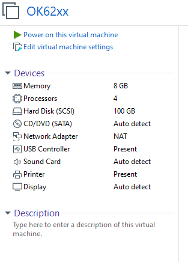
The provided development environment account is: forlinx and the password is: forlinx, fill in the password and select Sign in to log in.

So far, it has successfully entered the development environment provided by Forlinx.
3. Building the Development Environment Manually
Ubuntu is a Linux operating system distribution primarily focused on desktop applications. Ubuntu has many advantages and offers its own strengths compared to other Linux distributions. First of all, installing the system is very easy, requiring very little setup, and is fully comparable to a Windows desktop system; secondly, the GUI is very user-friendly and mimics the shortcuts that are commonly used under XP; when installing and upgrading programs, you can install the dependent packages by the system itself through the network, so you don’t have to worry about the dependencies of the Linux system anymore. Considering everyone’s usage habits and learning needs, it would be a good choice to use Ubuntu Linux.
There are numerous versions of Linux desktop systems, and currently, all the Linux experiments and source code in this manual are performed on the Ubuntu 18.04 system. With other versions of Linux desktop systems, problems related to the gcc compiler and library files may occur. If you encounter similar issues, you can seek advice and inquire on the official forums of the Linux distribution vendor. If you are not familiar with Linux, the method introduced by Forlinx is highly recommended.
A Linux environment is needed for development work. Kernel source code, Qt applications, U-Boot, etc. can’t be compiled under Windows. These tasks must be carried out in a Linux environment. Since most users are used to the Windows environment, VMware software can be used to provide Ubuntu virtual machines. Of course, Linux can also be installed on your computer or server for development.
Next, the process of building the virtual machine will be introduced.
Note:
The memory of the virtual machine environment should be ≥ 8 GB and the hard disk should be ≥ 100 GB to ensure that the full compilation can be passed;
Beginners are not recommended to set up a system on their own. It is recommended to use an existing virtual machine environment. If you do not need to set up the environment, you can skip this section.
3.1 Ubuntu System Virtual Machine Installation
The version of Ubuntu we chose to install is 18.04, and the introduction and development in this maual are all carried out on Ubuntu 18.04. First go to the Ubuntu official website to get the Ubuntu 18.04 64-bit image, the download address is: http://releases.ubuntu.com/18.04/
Download “Ubuntu-18.04.6-desktop-amd64.iso” (you can download the version that you actually need; this is just an example with 18.04.6).

3.1.1 Vmware Ubuntu Image Installation
If customers want to learn to build their own virtual machines, they can choose to install new virtual machines. However, if you don’t have a need for this, we recommend downloading the virtual machine we built to save time and avoid problems, as building a virtual machine is tedious and time-consuming.
Step 1: Open the VMware software and click on “Create New Virtual Machine”. Enter the following interface, check “Customize (Advanced)” and click “Next”:

Step 2: Select the compatibility of the corresponding VMware version. The version can be viewed in Help-> About VMware Workstation. Click “Next” after confirmation:

Select “Install program from disc image file”, then click “Next”；

Enter full name, user name and password and click “Next”:
Enter the virtual machine name and configuration installation location, and click “Next”:
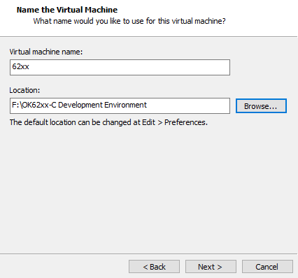
To configure the number of cores, click “Next”:

Configure appropriate memory space and select “Next”:

Set the network type, use the default NAT form for networking, and click “Next”. Subsequent steps remain at their default values until the disk capacity step is specified.

Use the recommended I/O controller, click “Next”:
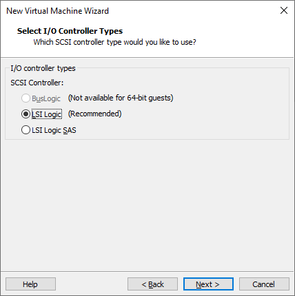
Use the recommended disk type, click “Next”:
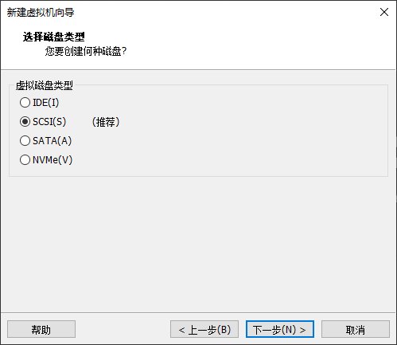
Use the default options, create a new virtual disk and click “Next”:

Allocate a disk size of 80G and divide the virtual disk into multiple files, click “Next”:

Click “Next” by default:

Click “Finish”:

After that, the virtual machine starts to install the image and wait patiently.
3.1.2 Solutions to VMware Errors
Error 1: Unable to connect to MKS: Too many socket connection attempts; giving up.

Solution: Right click on my computer to manage services and application services, and turn on all services related to VMware. After the service has started successfully, restart the virtual machine; or hang the virtual machine first, wait for it to start, and then continue to run the hung virtual machine.

Error 2: Internal error.

Solution: Refer to error 1.
Error 3: Unable to install service VMware Authorization Service (VMAuthdService):

Solution:
win+R
Input services.msc

Then find the service and start it, because this service is the authorization and authentication service used to start and access the virtual machine.

WMI must be started first

Error 4: Failed to install the hcmon driver

Solution: Delete C:\Windows\System32\drivers\hcmon.sys, then install again.
Error 5: Intel VT-x is disabled.

Solution:
Enter the BIOS interface when starting up the computer (press F2 or F12).
Go to “Configuration” –> “Intel Virtual Technology” –> Change “Disabled” to “Enabled” –> Save the settings, exit and restart the computer.
Re - open VMware and start the virtual machine.
If that doesn’t work, just turn the firewall off and reopen the VM. (varies by machine)
Error 6: The virtual machine appears to be in use… Acquiring Ownership (T)

Solution:
Shut down the virtual machine.
Enter the storage directory of the virtual machine and delete the *.lck files. The “.lck” extension indicates locked files.
Open the Windows Task Manager and terminate the VMware processes.

Restart the virtual machine.
Error 7: Failed to lock file.

Solution:
Enter the storage directory of the virtual machine.
Delete the files with the extensions
.vmem.lck,.vmdk.lck, and*.vmx.lck.Restart the virtual machine, and you should be able to enter it normally.
Error 8: The virtual machine could not be started because there was not enough memory available on the host.
Solution:
The virtual machine does not have enough memory to run the maximum requirement of the image. Increase the memory of the virtual machine and restart the virtual machine.
3.2 Ubuntu Common Software Installation
3.2.1 VScode
Click the icon similar to a package on the left side of the desktop to see some tools. We can also search for the tools we want. For example, we download a VScode tool, which is very convenient for our daily coding.

Please search for the tool we need, click in to view details, click install to download, wait for the download to complete automatic installation, and then click “Launch” to run it.


3.2.3 NFS Installation
The terminal executes the following command:
forlinx@ubuntu:~$ sudo apt-get install -y nfs-kernel-server nfs-common portmap

3.3 QT Environment Setup and Use
Qt Creator is a cross-platform QT integrated development environment (IDE) that includes advanced C + + code editors, project and build management tools for QT application framework design and application development. Qt Creator 5.14.2 selected for the installation.
The SDK provided by Forlinx provides a complete development environment for Qt5.14.2 (including Qt Quick).
3.3.1 Qt Creator Environment Setup
Path: OK62xx (Linux) user profile\tools\qt-opensource-linux-x64-5.14.2.run
Copy qt-opensource-linux-x64-5.14.2.run to any directory in the current user’s home directory and execute it:
forlinx@ubuntu:~/62xx$ chmod 777 qt-opensource-linux-x64-5.14.2.run
forlinx@ubuntu:~/62xx$ sudo ./qt-opensource-linux-x64-5.14.2.run
The following interface will pop up. Click “Next” to enter the next step:

Click “Next” to go to the next step:

In the following screen, click “Browse …” Select the installation path of Qtcreator, and then click “Next” to enter the next step:
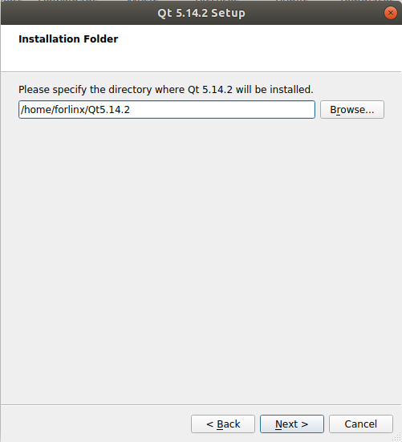
In the following interface, select the first item and click “Next” to enter the next step:

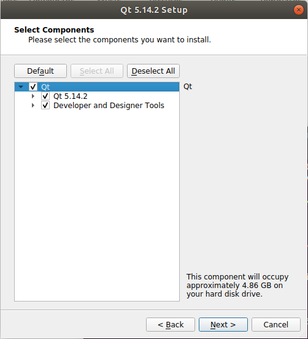
Agree to the agreement and click “Next”:
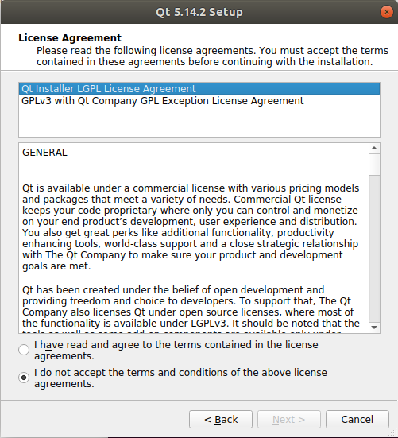

Click “Install” to install:
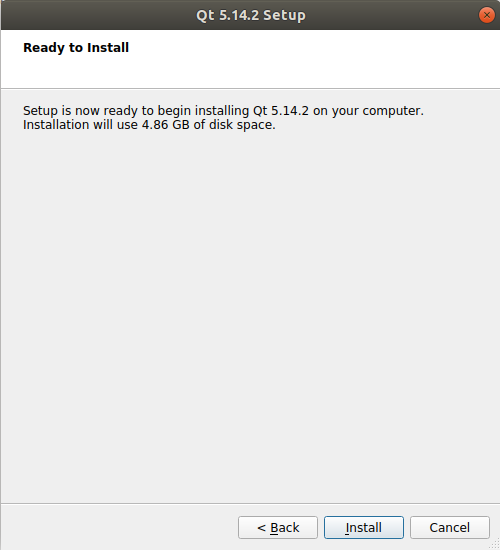
After the installation is completed, the following interface will be displayed. Uncheck the option “Launch Qt Creator” “and click” Finish “to complete the installation steps of Qt Creator:
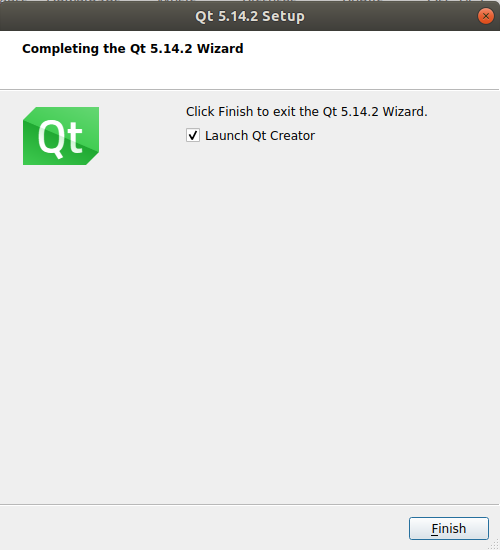
Enter the qtcreator actual installation directory/home/forlinx/Qt5.14.2/Tools/QtCreator/bin/directory:
forlinx@ubuntu:~$ cd /home/forlinx/Qt5.14.2/Tools/QtCreator/bin/
Start Qt Creator：
forlinx@ubuntu: ~/62xx/qtcreator-5.14.2/Tools/QtCreator/bin $ sudo ./qtcreator
[sudo] password for forlinx: forlinx //Enter the password for the forlinx user, no display
QStandardPaths: XDG_RUNTIME_DIR not set, defaulting to '/tmp/runtime-root'
QStandardPaths: XDG_RUNTIME_DIR not set, defaulting to '/tmp/runtime-root'

The Qt Creator tool screen appears. Qt Creator is installed.
3.3.2 Environment Configuration
Note:
Be sure to configure the environment variables first (see “4.3.2 Environment Variables Setting”), then open the Qt Creator with the command;
Open Qt Creator according to your actual installation path.
Qt is a cross-platform graphics development library, which supports many operating systems. Before compiling, you need to configure the compiling environment of Qt Creator.
3.3.2.1 Configuration of the Cross-compiler
Start Qt Creator, and the Qt development interface will appear. Click Tools- > option:
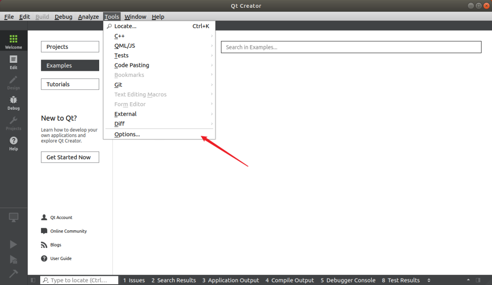
Enter the Options interface, click “Kits” on the left, then click the “Compilers” tab on the top of the middle, and click “Add-> GCC-> C + +” on the right, as shown in the figure:

The following window will pop up. Click “Browser” in the “Compiler path” option. In the SDK package, navigate to /opt/arago-2023.04/sysroots/x86_64-arago-linux/usr/bin/aarch64-oe-linux and find “aarch64-oe-linux-g++”. After selecting it, click “Open”, and change the “Name” to “G++”.
Follow the same method to add GCC compiler, click “Add->GCC->C” on the right side, as shown in the figure:

Find “aarch64-oe-linux-gcc” under /opt/arago-2023.04/sysroots/x86_64-arago-linux/usr/bin/aarch64-oe-linux in the SDK package. Select it, click “Open”, and change the Name to “GCC”.

3.3.2.2 Debuggers Configuration
Click the Debuggers, the following interface will pop up, and then click “Add”:

The following window will pop up. In the SDK package, go to /opt/arago-2023.04/sysroots/x86_64-arago-linux/usr/bin/aarch64-oe-linux and find “aarch64-oe-linux-gdb”. After selecting it, click “Open” and change the “Name” to “debuggers”.
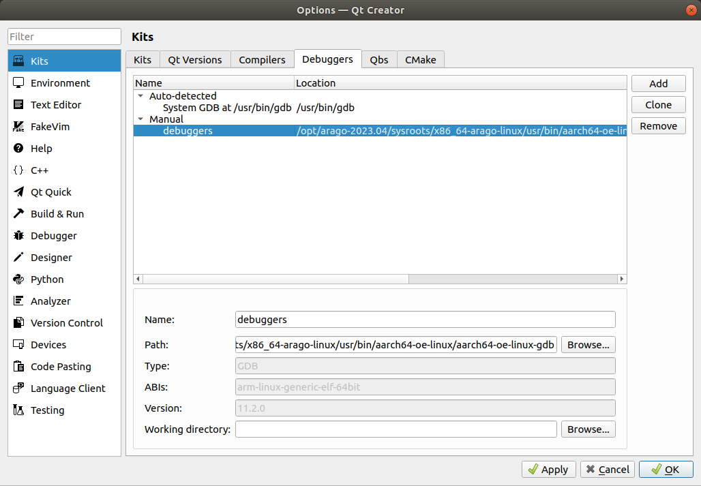
3.3.2.3 Qt Version Configuration
Click the Qt Versions tab and click Add:

In the directory /opt/arago-2023.04/sysroots/x86_64-arago-linux/usr/bin, find qmake. After selecting it, click “Open”. After adding it, the following display will appear. Then click “Apply”.
3.3.2.4 Kits Configuration
Click on the “Kits” tab, then click “Add” on the right - hand side to add a new kit. Modify it according to the content in the following figure and click “Apply”.

Note: After configuring Kits, there is a yellow exclamation mark in front of it, indicating that there is a warning, but it does not affect the use. If you want to know what the warning is, you can put the mouse over the yellow exclamation mark.
4. Related Code Compilation
Note: The development environment provided by Forlinx already includes the cross-compilation toolchain and the Qt Creator desktop application by default. The necessary preparations for compilation have been installed and there is no need to reinstall them.
Versions :
Development environment Operating system: Ubuntu 18.04 64-bit
Cross tool chain: aarch64-oe-linux-gcc-11.3.0 / arm-none-linux-gnueabihf-gcc-11.31
Bootloader of Development board: U-Boot 2023.04
Development board kernel: Linux 6.1.33
Development board porting Qt version: Qt5.15.7
4.1 Preparation Before Compilation
The Forlinx OK62xx-linux-sdk package includes a cross-compilation toolchain, Linux kernel source code, file system, source code for test programs, and some tools.
Before compiling, execute the following commands to install the necessary toolkits.
forlinx@ubuntu:~$ sudo apt-get update
forlinx@ubuntu:~$ sudo apt-get install openssh-server vim git fakeroot make automake \
autoconf libtool libssl-dev bc dosfstools mtools parted iproute2 gcc kmod u-boot-tools \
flex bison
4.2 Source Code Installation Package
If the user is using the 1G+8G version, they need to read the user documentation \Linux\Source Code\Important Information for Using 1G+8G Configuration!
Path：OK62xx-C（Linux）user’s profile\Linux\source code\OK62xx-linux-sdk.tar.bz2.00、OK62xx-linux-sdk.tar.bz2.01
The source code package contains the source code required by OK62xx platform provided by Forlinx, including Linux kernel source code, test program source code, file system, etc. You can carry out secondary development on this basis.
Create a working directory in Ubuntu
forlinx@ubuntu:~$ mkdir -p /home/forlinx/62xx
Copy OK62xx-linux-sdk.tar.bz2.00, OK62xx-linux-sdk.tar.bz2.01 to the virtual machine /home/forlinx/62xx directory and extract them:
forlinx@ubuntu:~/62xx$ md5sum OK62xx-linux-sdk.tar.bz2.0*
df0054795cffc36cf47243e804a3db15 OK62xx-linux-sdk.tar.bz2.00
0795b6e6343485a3c0c79a01dd50b673 OK62xx-linux-sdk.tar.bz2.01
// Since the version and packaging time vary, the MD5 values of the SDK packages will be different. Please determine whether the SDK package is complete based on the MD5 values in the sdk_md5sum.txt file in the SDK you obtained.
// Execute the following commands to merge the split compressed packages and then extract them.
forlinx@ubuntu:~/62xx$ cat OK62xx-linux-sdk.tar.bz2.0* > OK62xx-linux-sdk.tar.bz2
forlinx@ubuntu:~/62xx$ tar -jxvf OK62xx-linux-sdk.tar.bz2
forlinx@ubuntu:~/62xx$ ls
OK62xx-linux-sdk OK62xx-linux-sdk.tar.bz2 OK62xx-linux-sdk.tar.bz2.00 OK62xx-linux-sdk.tar.bz2.01 // The file was successfully extracted.
4.3 Compilation Test
Note: After unpacking the kernel source code for the first time, you need to compile it as a whole. After compiling the entire code, you can compile it individually according to the actual situation.
4.3.1 Installation of Compilation Environment Package
The cross-compilation environment is the foundation of our development process. First, let’s install the compilation environment.
Step1: Enter /home/forlinx/6254/ OK6254-linux-sdk
forlinx@ubuntu:~$ cd /home/forlinx/6254/OK6254-linux-sdk
Step2: Install the compilation environment package and execute the following command(.there is a space behind it):
forlinx@ubuntu:~/6254/ OK6254-linux-sdk $. build.sh
Enter target directory for SDK (default: /usr/local/arago-2021.09): You are about to install the SDK to "/opt/arago-2021.09-aarch64-linux-tisdk". Proceed[Y/n]?[sudo] password for forlinx:
Extracting SDK...done
Setting it up...done
SDK has been successfully set up and is ready to be used.
Make sure that the network is open during the installation process and that the Ubuntu system has access to an extranet.
This printed information proves that the installation was successful:
SDK has been successfully set up and is ready to be used.
4.3.2 Environment Variables Settings
Note:
After setting the environment variables, you don’t need to reset them the next time you compile as long as you don’t change terminals;
If you reopen a new terminal or switch accounts, you need to reset the environment variables before compiling.
Setting environment variables is mainly to specify the target architecture and cross-compilation tool chain, as well as the path of some libraries used in the compilation process. Use the following command to configure (. There is a space behind):
forlinx@ubuntu:~/6254/OK6254-linux-sdk $ . /opt/arago-2023.04/environment-setup-aarch64-oe-linux
Enter the following command to check whether the installation is successful:
forlinx@ubuntu:~/6254/OK6254-linux-sdk $ env | grep arago-2023
[…]
CC=aarch64-oe-linux-gcc --sysroot=/opt/arago-2023.04/sysroots/aarch64-oe-linux
TI_PATH=/opt/arago-2023.04/sysroots/x86_64-arago-linux/usr/bin/
PKG_CONFIG_SYSROOT_DIR=/opt/arago-2023.04/sysroots/aarch64-oe-linux
OE_QMAKE_UIC=/opt/arago-2023.04/sysroots/x86_64-arago-linux/usr/bin/uic
[…]
PKG_CONFIG_PATH=/opt/arago-2023.04/sysroots/aarch64-oe-linux/usr/lib/pkgconfig:/opt/arago-2023.04/sysroots/aarch64-oe-linux/usr/share/pkgconfig
CPP=aarch64-oe-linux-gcc -E --sysroot=/opt/arago-2023.04/sysroots/aarch64-oe-linux
LD=aarch64-oe-linux-ld --sysroot=/opt/arago-2023.04/sysroots/aarch64-oe-linux
//Confirm successful installation by environment variable information
The above message indicates that the installation was successful.
4.3.3 Full Compilation Test
Note: If the file system size exceeds the preset capacity after adding files to the file system and the compilation reports an error, you can increase the preset capacity.
Execute the following command to enter the SDK directory:
forlinx@ubuntu:~/62xx$ cd OK62xx-linux-sdk
Display the commands supported by the compilation tool:
forlinx@ubuntu:~/62xx/OK62xx-linux-sdk $./build.sh help
Usage:
./build.sh all gp/hsfs 1g/2g - build all
./build.sh uboot gp/hsfs 1g/2g - only build uboot
./build.sh ti-boot - only build ti-boot
./build.sh kernel - only build kernel
./build.sh extra - only build extra
./build.sh ramdisk - only build ramdisk
./build.sh mkfs - only build mkfs
./build.sh apps - only build apps
./build.sh dfu - only build dfu
./build.sh pru - distclean pru
./build.sh clean - clean all
./build.sh clean_uboot - clean uboot
./build.sh clean_kernel - clean kernel
./build.sh help - print usage
. build.sh - set env
Execute the full compilation command:
Note: The 6254 product has two versions 2G and 1G, and currently 6231 is the 1G memory version while 6232 is the 2G memory version. When performing full compilation and compiling uboot, it is necessary to distinguish between the memory sizes.
forlinx@ubuntu:~/62xx/OK62xx-linux-sdk $ sudo ./build.sh all hsfs 1g（2g）
If the display shows as follows, it indicates that the compilation is successful:
85184+0 records in
85184+0 records out
87228416 bytes (87 MB, 83 MiB) copied, 1.63527 s, 53.3 MB/s
81987+1 records in
81987+1 records out
7068018688 bytes (7.1 GB, 6.6 GiB) copied, 22.0939 s, 320 MB/s
forlinx@ubuntu:~/62xx/OK62xx-linux-sdk$
After the compilation is complete, the image files will be generated in the “images” directory.
forlinx@ubuntu:~/62xx/OK62xx-linux-sdk/images$ tree
├── boot.img
├── Image
├── OK6231-C.dtb
├── OK6231-C-lvds.dtbo
├── OK6231-C-lvds-dual.dtbo
├── OK6231-C-rgb800_480.dtbo
├── OK6231-C-rgb.dtbo
├── OK6231-C-rgb-lvds-dual.dtbo
├── OK6232-C.dtb
├── OK6232-C-lvds.dtbo
├── OK6232-C-lvds-dual.dtbo
├── OK6232-C-rgb800_480.dtbo
├── OK6232-C-rgb.dtbo
├── OK6232-C-rgb-lvds-dual.dtbo
├── OK6254-C.dtb
├── OK6254-C-lvds.dtbo
├── OK6254-C-lvds-dual.dtbo
├── OK6254-C-rgb800_480.dtbo
├── OK6254-C-rgb.dtbo
├── OK6254-C-rgb-lvds-dual.dtbo
├── ok62xx-linux-fs.sdcard.aa
├── ok62xx-linux-fs.sdcard.ab
├── ok62xx-linux-fs.sdcard.ac
├── ramdisk.img.gz
├── tiboot3-am62x-gp-evm.bin
├── tiboot3-am62x-hs-evm.bin
├── tiboot3.bin
├── tispl.bin
└── u-boot.img
A description of the file in images:
File |
Description |
|---|---|
Image |
Kernel image |
OK62xx-C.dtb |
Kernel device tree |
ok62xx-linux-fs.sdcard* |
File system packaging. |
ramdisk.img.gz |
A virtual file system for flashing. |
tiboot3.bin, tispl.bin, u-boot.img |
Uboot image |
boot.img |
Packing the boot partition |
OK62xx-C-lvds* |
LVDS displays the device tree |
OK62xx-C-rgb* |
RGB display device tree |
4.3.4 Compiling the Kernel Separately
The kernel source code of 62xx is stored in the OK62xx-linux-sdk/OK62xx-linux-kernel directory.
Execute the following command to enter the sdk directory:
forlinx@ubuntu:~/62xx$ cd OK62xx-linux-sdk/
Execute the command to compile the kernel separately:
forlinx@ubuntu:~/62xx/OK62xx-linux-sdk$ sudo ./build.sh kernel
Note: During the compilation process, if there is no .config file in the root directory of the kernel, the system will automatically copy the configuration file “arch/arm64/configs/OK62xx-C_defconfig” and rename it as .config, placing it in the root directory of the kernel.
Compiling the kernel generates a new Image and several device tree files in the images directory.
Execute the command to clean up the compilation, which is used to clean up the files generated by compiling the Linux kernel:
forlinx@ubuntu:~/62xx/OK62xx-linux-sdk$ sudo ./build.sh clean_kernel
If the following information appears, it indicates that the cleanup is completed:
Note:
The kernel image and device tree in the images directory are not cleared by this command;
When compiling the kernel separately, you need to replace the OK62xx-linux-fs/rootfs/lib/modules/ directory with the same directory of the development board at the same time.
4.3.5 Compiling the Ramdisk
Execute the following command to enter the sdk directory:
forlinx@ubuntu:~/62xx$ cd OK62xx-linux-sdk/
Execute the following command to compile the ramdisk:
forlinx@ubuntu:~/62xx/OK62xx-linux-sdk$ sudo ./build.sh ramdisk
After compilation, the ramdisk.img.gz file will be generated in the OK62xx-linux-sdk/image directory.
The ramdisk source code path bit is OK62xx-linux-sdk/tools/ramdisk. If you need to add, delete or modify the files in ramdisk, you can operate in this directory.
If the following message appears, you need to compile uboot before executing the sudo. /build.sh ramdisk：
dd: failed to open ‘/home/forlinx/62xx/OK62xx-linux-sdk/images/boot.img’: No such file or directory
4.3.6 Command Line and Qt Test Program Compilation
The command line and Qt test programs are stored in the OK62xx-linux-sdk/appsrc/forlinx-cmd directory and the OK62xx-linux-sdk/ appsrc/forlinx-qt directory.
Execute the following command to enter the sdk directory and execute the environment variables:
forlinx@ubuntu:~/62xx$ cd OK62xx-linux-sdk/
Execute the following command to compile the command line test program:
forlinx@ubuntu:~/62xx/OK62xx-linux-sdk$ sudo ./build.sh apps
After executing the compile command, the command line and Qt test program will be installed to the OK62xx-linux-sdk/OK62xx-linux-fs/rootfs/usr/bin/directory.
The following command can be used to check if the time is new:
forlinx@ubuntu:~/work/OK62xx-linux-sdk/OK62xx-linux-fs/rootfs$ ls -la usr/bin/ |grep fltest*
-rwxrwxr-x 1 root root 402 Oct 18 14:26 fltest_gpio.sh
-rwxrwxr-x 1 root root 470 Oct 18 14:26 fltest_gpio.sh.orig
-rwxrwxr-x 1 root root 541 Oct 18 14:26 fltest_hostapd.sh
-rwxrwxr-x 1 root root 461 Oct 18 14:26 fltest_m4fss.sh
-rwxrwxr-x 1 root root 477 Oct 18 14:26 fltest_memory_bandwidth.sh
-rwxrwxr-x 1 root root 93 Oct 18 14:26 fltest_obexd.sh
-rwxrwxr-x 1 root root 1064 Oct 18 14:26 fltest_pru.sh
-rwxr-xr-x 1 root root 40232 Oct 19 10:29 fltest_qt_4g
-rwxr-xr-x 1 root root 69416 Oct 19 10:29 fltest_qt_audiorecorder
-rwxr-xr-x 1 root root 27792 Oct 19 10:29 fltest_qt_backlight
-rwxr-xr-x 1 root root 73808 Oct 19 10:29 fltest_qt_books
-rwxr-xr-x 1 root root 73280 Oct 19 10:29 fltest_qt_camera
-rwxr-xr-x 1 root root 36320 Oct 19 10:29 fltest_qt_inputchinese
-rwxr-xr-x 1 root root 65640 Oct 19 10:29 fltest_qt_musicplayer
-rwxr-xr-x 1 root root 77744 Oct 19 10:29 fltest_qt_network
-rwxr-xr-x 1 root root 36064 Oct 19 10:29 fltest_qt_pingtest
-rwxr-xr-x 1 root root 78792 Oct 19 10:29 fltest_qt_qopenglwidget
-rwxr-xr-x 1 root root 31984 Oct 19 10:29 fltest_qt_rtc
-rwxrwxr-x 1 root root 189712 Oct 18 14:26 fltest_qt_simplebrowser
-rwxr-xr-x 1 root root 48608 Oct 19 10:29 fltest_qt_spitest
-rwxr-xr-x 1 root root 164104 Oct 19 10:29 fltest_qt_terminal
-rwxr-xr-x 1 root root 35976 Oct 19 10:29 fltest_qt_ubootmenu
-rwxr-xr-x 1 root root 31904 Oct 19 10:29 fltest_qt_watchdog
-rwxr-xr-x 1 root root 40256 Oct 19 10:29 fltest_qt_wifi
-rwxrwxr-x 1 root root 287 Oct 18 14:26 fltest_quectel.sh
-rwxrwxr-x 1 root root 44 Oct 18 14:26 fltest_reset_a53.sh
-rwxrwxr-x 1 root root 26496 Oct 19 10:29 fltest_spidev_test
-rwxrwxr-x 1 root root 25904 Oct 19 10:29 fltest_uarttest
-rwxrwxr-x 1 root root 19552 Oct 19 10:29 fltest_watchdog
-rwxrwxr-x 1 root root 18544 Oct 19 10:29 fltest_watchdogrestart
-rwxrwxr-x 1 root root 3004 Oct 18 14:26 fltest_wifi.sh
4.3.7 File System Compilation
After adding the environment variables, execute the following command to generate the file system.
forlinx@ubuntu:~/62xx/OK62xx-linux-sdk$ sudo ./build.sh mkfs
The compiled filesystem will be stored in the ok62xx-linux-sdk/image directory under the name ok62xx-linux-fs.sdcard.a*, and the resulting filesystem can be used to flash into emmc.
If you need to modify the contents of the file system, you can modify the file system source files in the OK62xx-linux-sdk/OK62xx-linux-fs/rootfs directory.
4.3.8 SDK Clearance
Execute clear compilation to clear the files generated by compilation. At this time, all files generated by SDK compilation are cleared:
Note: Since uboot is not open source, this command will not clear the uboot image file (tiboot3.bin, tispl.bin, u-boot.img) in the images directory.
forlinx@ubuntu:~/62xx/OK62xx-linux-sdk$ sudo ./build.sh clean
4.4 Application Compilation and Operation
4.4.1 Command Line Application Compilation and Operation
Note: The cross-compiler is installed and the environment variables are set by default for the following operations
This section uses the watchdog test program. The default program is copied to the/home/forlinx/62xx directory.
1. Execute the environment variables and use the cd command to enter the Watchdog application source code directory:
forlinx@ubuntu:~$ cd OK62xx-linux-sdk
forlinx@ubuntu:~$ cd /home/forlinx/62xx/OK62xx-linux-sdk/appsrc/forlinx-cmd/watchdog
forlinx@ubuntu:~$ . /opt/arago-2023.04/environment-setup-aarch64-oe-linux
2. Use $CC to cross-compile. After setting the environment variables, $CC is the GCC of the cross-compiler. For specific configuration, see the script for setting the environment variables:
forlinx@ubuntu:~/62xx/OK62xx-linux-sdk/appsrc/forlinx-cmd/watchdog# make
forlinx@ubuntu:~/62xx/OK62xx-linux-sdk/appsrc/forlinx-cmd/watchdog# ls
fltest_watchdog Makefile watchdog.c watchdog.o
Use the file command to view the generated file information
forlinx@ubuntu:~/62xx/OK62xx-linux-sdk/appsrc/forlinx-cmd/watchdog# file fltest_watchdog
Information results:
fltest_watchdog: ELF 64-bit LSB executable, ARM aarch64, version 1 (SYSV), dynamically linked, interpreter /lib/ld-linux-aarch64.so.1, for GNU/Linux 3.7.0, with debug_info, not stripped
From the result, you can see that the compiled 64-bit ARM file.
3. Copy the fltest _ watchdog generated by compiling to the board through U disk, such as/usr/bin path, and run the test.
Use the CD command to enter the/usr/bin/path of the development board.
root@OK62xx:~# cd /usr/bin/
Copy the fltest _ watchdog program generated by compiling from the U disk mounting path to the current path
root@OK62xx:/usr/bin/# cp /run/media/sda1/fltest_watchdog ./
Give the program executable permission and run it
root@OK62xx:/usr/bin/# chmod 777 fltest_watchdog //Set Executable Permissions to a Program
root@OK62xx:/usr/bin/# ./fltest_watchdog //Run the program
Refer to the chapter “Watchdog Test” in the user manual of the software for test.
4.4.2 Qt Application Compilation and Operation
Note: The cross-compiler is installed and the environment variables are set by default for the following operations.
4.4.2.1 Manual Compilation of Qt Application
Method 1: Compile with qmake from the command line.
Set compilation environment variables：
forlinx@ubuntu:~$ . /opt/arago-2023.04/environment-setup-aarch64-oe-linux
Take the official Qt watchdog test program provided by Forlinx as an example to demonstrate the command line Qt program compilation method:
forlinx@ubuntu:~$ cd /home/forlinx/62xx/OK62xx-linux-sdk/appsrc/forlinx-qt/ fltest_qt_watchdog
forlinx@ubuntu:~/62xx/OK62xx-linux-sdk/appsrc/forlinx-qt/fltest_qt_watchdog$ qmake
forlinx@ubuntu:~/62xx/OK62xx-linux-sdk/appsrc/forlinx-qt/fltest_qt_watchdog$ make
Method 2: Call qmake to compile through Qt Creator.
See section 4.4.2.2 for Qt Creator usage.
Enter/home/forlinx/62xx/qtcreator-5.14.2/Tools/QtCreator/bin:
forlinx@ubuntu:~$ cd /home/forlinx/62xx/qtcreator-5.14.2/Tools/QtCreator/bin
Boot Qt creator ：
forlinx@ubuntu: ~/62xx/qtcreator-5.14.2/Tools/QtCreator/bin $ sudo ./qtcreator
[sudo] password for forlinx: //Enter forlinx user password, no display
Click Qt Creator File->Open File or Project, a pop-up window will appear, select /home/forlinx/62xx/OK62xx-linux-sdk/appsrc/forlinx-qt/fltest_qt_backlight/fltest_qt_backlight.pro, click open, as shown below:

The Configure Project window pops up, select the 62xx configured before, and click Configure Project, as shown below:
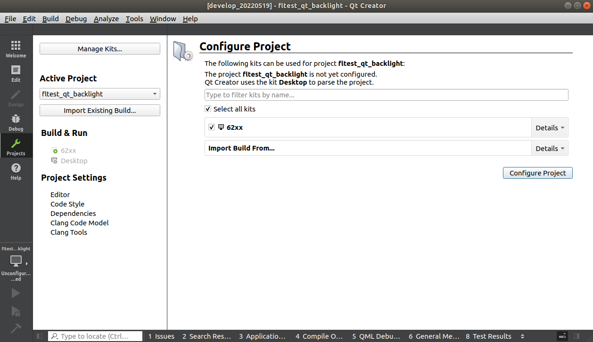
After opening the project, the interface is as follows:

Click Build->Clean All to clear it. (If the intermediate file is not cleared, it can be deleted manually)

Then click Build-> Build All to compile.

The Build progress bar in the lower right corner means that the compilation is complete. At this point in the path /home/forlinx/62xx/OK62xx-linux-sdk/appsrc/forlinx-qt/fltest_qt_backlight/ directory, you will see the newly generated binary file fltest_qt_ backlight, as follows:
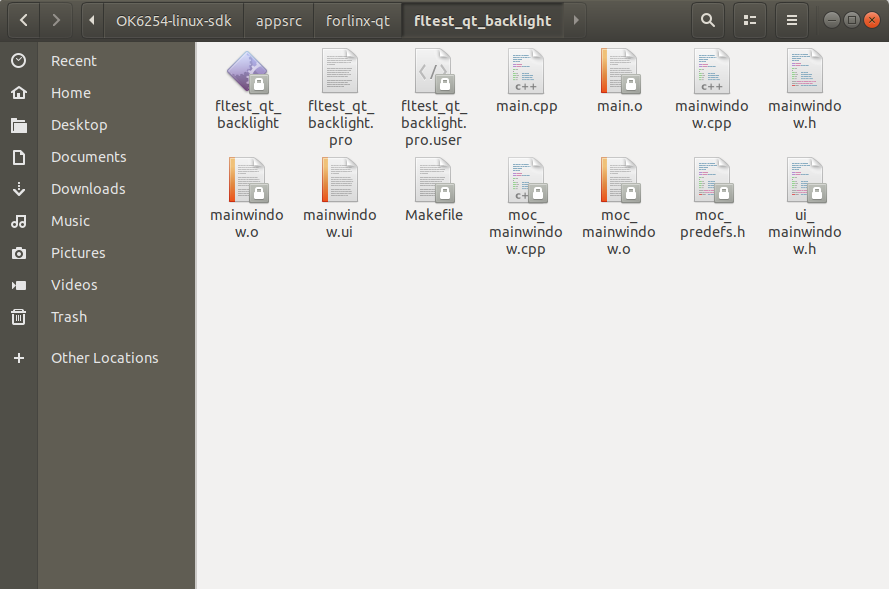
Replace the method of running QT program in the desktop
1. Flash the development board and boot qt system.
2. Copy the executable file of the generated fltest_qt_backlight to the U disk, and then insert the U disk into the development board.
3. Execute the following commands to copy fltest_qt_backlight to the appropriate directory, replace the original fltest_qt_backlight application, set executable permissions for the program, and reboot the board after file synchronization.
Use the cd command to enter the default path to the qt program on the development board’s desktop system:
root@OK62xx:~# cd /usr/bin/
Rename the backup of the original fltest_qt_backlight file with the mv command:
root@OK62xx:/usr/bin# mv fltest_qt_backlight fltest_qt_backlight-old
Copy the fltest_watchdog_qt program from the USB flash drive to the current directory:
root@OK62xx:/usr/bin# cp /run/media/sda1/fltest_qt_backlight ./
Give executable permissions and save to reboot the development board:
root@OK62xx:/usr/bin# chmod 777 fltest_qt_backlight //Give all groups executable permission
root@OK62xx:/usr/bin# sync //File synchronization
root@OK62xx:/usr/bin# reboot ///Restart the development board
4. Qt interface fltest _qt_ backlight applications are up to date after board restart. If the fltest _qt_ backlight is executed successfully and the window is opened, it means that the newly compiled Qt application can be used and the Qt application development environment is configured successfully.
Test Qt Program Methods Individually:
Copy the executable file of the generated fltest_qt_backlight to the U disk, then insert the U disk into the development board, and copy the program to the/home path.
Set executable permissions to the program.
Test the Qt program.
Copy the fltest_watchdog_qt file from the U disk mounting path to the development board/home path.
root@OK62xx:~# cp /run/media/sda1/ fltest_qt_backlight /home
Use the CD command to go to the/home directory and grant executable rights to the fltest_watchdog_qt.
root@OK62xx:~# cd /home
root@OK62xx:/home# chmod 777 fltest_qt_backlight
Run backlight application
root@OK62xx:/home#./fltest_qt_backlight
4.4.2.2 Qt Creator Development Examples
Environment variables to execute the cross-compiler:
forlinx@ubuntu:~$ . /opt/arago-2023.04/environment-setup-aarch64-oe-linux
Enter home/forlinx/qtcreator-4.7.0/bin:
forlinx@ubuntu:~$ cd /opt/Qt5.14.2/Tools/QtCreator/bin
Boot Qt Creator ：
forlinx@ubuntu:~ /62xx/qtcreator-5.14.2/Tools/QtCreator/bin $ sudo ./qtcreator
[sudo] password for forlinx: //Enter forlinx user password, no display
Start the Qt Creator program, enter the Qt Creator interface, click “New Project” to create a new project:

Select “Application”->”Qt Widgets Application”, and then click “Choose” in the lower right corner:
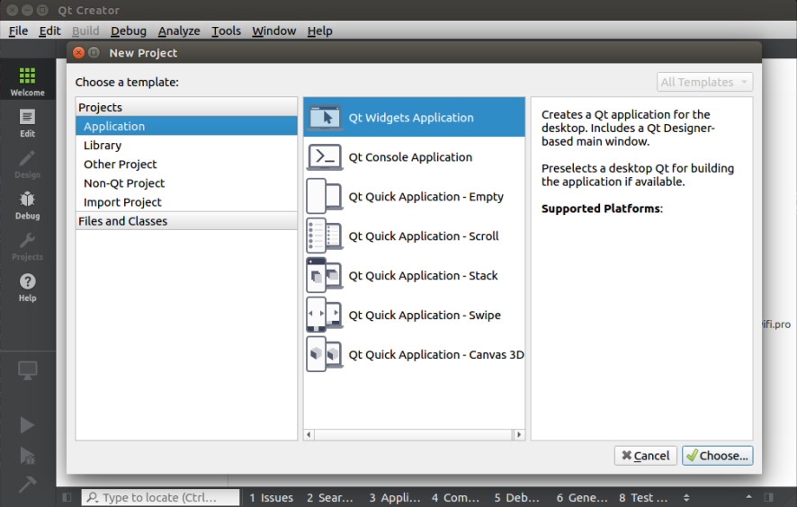
In the following interface, change the name of the new project to “helloworld”, select the installation path /home/forlinx, and then click “Next”:

Select qmake and click Next to continue.
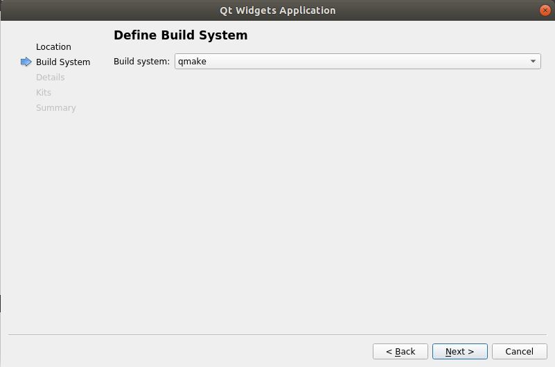
In the following screen, change the class name to “helloworld”, select the base class to “Qwidget”, and then click “Next”.

In the following screen, select “62xx” as the kit of the current project, and then click “Next”:
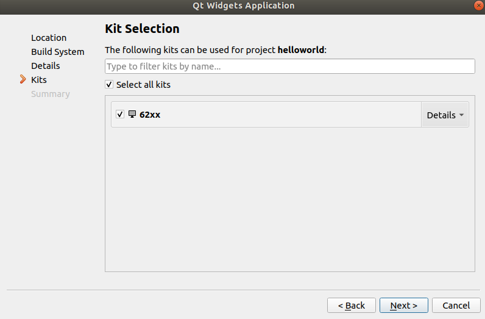
In the following interface, click “Finish” to complete the new project:

When the creation of the new project is complete, the following window can be displayed:
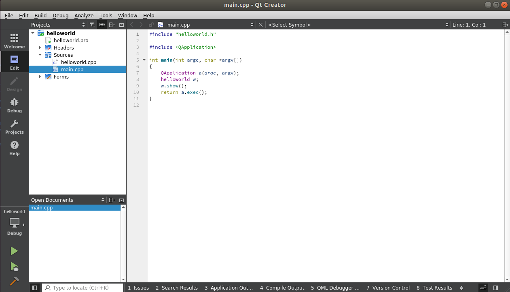
When the program is completed, click the hammer icon in the lower left corner to cross-compile. Copy the compiled executable program helloworld to the development board to test the application.
The test method is the same as the Qt application test method in 4.4.2.1.